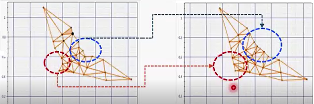
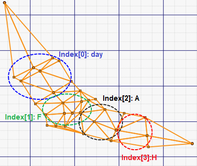

Prerequisite: Before performing any fine tuning, be sure to run the AWB initial tuning procedure to generate initial parameter values and predefined triangle gain adjust values.
Use this procedure to customize the triangle data generated by AWB initial tuning
Tune existing triangle parameters
- Open the project and click the AWB tab.
- In the List View tab, select Triangle Gain Adjust.
- Click the Triangles tab.
- In the Trigger Tuning section, select the triangle you want to modify from the Triangle # field.
- To modify a lux index trigger range, double-click the appropriate pair in the second column to open the values for editing. Enter the change and click outside the edit box to save.
- To modify the gain adjust data, double-click the appropriate triplet in the third column to open the values for editing. Enter the change and click outside the edit box to save.
- To save your changes, select .
Add a lux index trigger region
- Open the project and click the AWB tab.
- In the List View tab, select Triangle Gain Adjust.
- Click the Triangles tab.
- In the Trigger Tuning section, select the triangle you want to modify from the Triangle # field.
- In the second column, highlight the lux index above or below where you want
to add the new trigger region, then click Add
above or Add below to
add a new row.Note: The tool does not allow adding a row above the minimum lux index or adding a row below the maximum lux index.
- Double-click the new second column entry to open the values for editing. Enter the start and end values for the new lux index trigger range. Click outside the edit box to save.
- Double-click the new third column entry to open the values for editing. Enter the red, green, and blue gain adjust values for the new trigger range. Click outside the edit box to save.
- To save your changes, select .
Delete a lux index trigger region
- Open the project and click the AWB tab.
- In the List View tab, select Triangle Gain Adjust.
- Click the Triangles tab.
- In the Trigger Tuning section, select the triangle you want to modify from the Triangle # field.
- In the second column, highlight the lux index trigger region you want to delete, then click Remove.
- To save your changes, select .
Add a triangle to the mesh
- Open the project and click the AWB tab.
- In the List View tab, select Triangle Gain Adjust.
- Click the Triangles tab.
- In the mesh plot, CTRL + click in the spot where you want to add a vertex. The tool may complete the triangle, but add other vertices if needed.
- If you need to relocate a vertex of the new triangle, Shift + drag the vertex in the mesh plot.
- To save your changes, select .
Move a triangle vertex
- Open the project and click the AWB tab.
- In the List View tab, select Triangle Gain Adjust.
- Click the Triangles tab.
- In the mesh plot, Shift + drag the vertex to the new location.
- To save your changes, select .
Delete a triangle from the mesh
- Open the project and click the AWB tab.
- In the List View tab, select Triangle Gain Adjust.
- Click the Triangles tab.
- Select the triangle that you want to delete using one of these
methods:
- In the Trigger Tuning section, select the triangle you want to delete from the Triangle # field. The triangle is highlighted in the mesh.
- In the mesh plot, click on the triangle you want to delete to highlight it.
- Press the Delete key.
- To save your changes, select .
Tune CCT-based gain adjust parameters
- Open the project and click the AWB tab.
- In the List View tab, select Triangle Gain Adjust.
- Click the CCT-based adjust gains tab.
- To modify a Lux Index trigger range, double-click the appropriate pair in the first column to open the values for editing. Enter the change and click outside the edit box to save.
- To modify a CCT trigger range, double-click the appropriate pair in the second column to open the values for editing. Enter the change and click outside the edit box to save.
- To modify the gain adjust data, double-click the appropriate triplet in the third column to open the values for editing. Enter the change and click outside the edit box to save.
- To save your changes, select .
Add a CCT-based gain adjust trigger region
- Open the project and click the AWB tab.
- In the List View tab, select Triangle Gain Adjust.
- Click the CCT-based gain adjust tab.
- In the first column, highlight the lux index above or below
where you want to add the new trigger region, then click Add above or Add
below to add a new row. Note: The tool does not allow adding a row above the minimum lux index or adding a row below the maximum lux index.
- Double-click the new first column entry to open the values for editing. Enter the start and end values for the new lux index trigger range. Click outside the edit box to save.
- Double-click the new second column entry to open the values for editing. Enter the start and end values for the new CCT trigger range. Click outside the edit box to save.
- Double-click the new third column entry to open the values for editing. Enter the red, green, and blue gain adjust values for the new trigger range. Click outside the edit box to save.
- To save your changes, select .
Useful tuning guidelines
- It is better for the triangle mesh to cover a larger area than the distance
weight. This is a safeguard when the AWB decision is determined by stats that
are located in the buffer zone.

- If there are convex shapes on the triangle mesh boundary, it is better to
remove the convex shape by moving the vertices adjacent to the convex shape.Figure : (L) Convex shapes (R) Adjusted shapes

- When you select the start triangle index, it is better to select each index from
the areas shown in the diagram.
